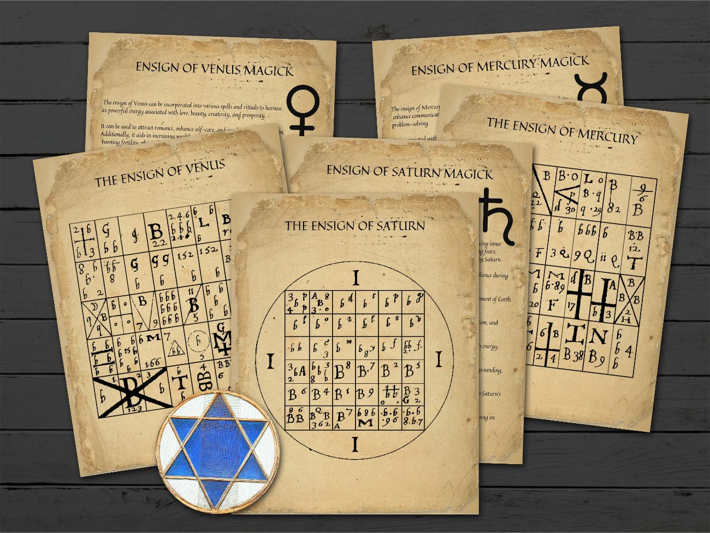
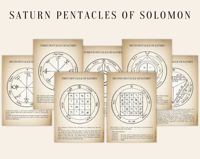

Planets: Celestial Bodies and Their Esoteric ConnectionsWhile modern science examines celestial bodies through the lens of physics and mathematics, ancient traditions saw deeper spiritual significance in these same phenomena. These two perspectives are not necessarily at odds but rather reflect different layers of understanding the cosmos. By exploring the symbolic connections between planets and ancient deities, we can see how humanity’s search for meaning in the heavens has persisted across time, shaping both scientific discovery and spiritual belief. In modern astronomy, the eight planets in our solar system are understood in terms of their orbits, masses, and interactions with each other through gravity. However, the significance of these celestial bodies goes beyond their physical characteristics. Recent studies in astrophysics have shown that the geometry of planetary systems reflects deeper mathematical principles, echoing ideas from ancient philosophies. For example, Kepler's "Music of the Spheres," which linked planetary motion to harmonious sounds, is echoed in modern theories of resonance and oscillation in celestial systems. Researchers have found that the arrangement of planets can create orbital resonances—mathematical relationships where the gravitational pull between planets stabilizes their orbits. These discoveries show that the ancient belief in cosmic harmony is not entirely at odds with contemporary science, as the physical universe continues to reveal intricate patterns that reflect deeper underlying structures. Planets are celestial bodies that orbit stars and reflect their light rather than producing their own. In our solar system, the eight recognized planets—Mercury, Venus, Earth, Mars, Jupiter, Saturn, Uranus, and Neptune—each have distinct physical characteristics, such as size, composition, atmosphere, and surface conditions. While science explains these bodies in terms of their physical properties and movements, there is also a rich tapestry of esoteric and spiritual meanings associated with them. The idea that planets are more than physical entities is not limited to ancient cultures. In medieval and Renaissance Europe, astronomers such as Johannes Kepler sought to reconcile their scientific observations with spiritual beliefs. Kepler, in particular, saw the motion of planets as expressions of divine geometry, reflecting God’s plan for the cosmos. His notion of the "Music of the Spheres" resonated with the ancient Pythagorean idea that celestial movements produce harmonious sounds, suggesting that the very structure of the universe is a divine symphony. While modern science provides an objective understanding of the physical properties of planets, ancient civilizations saw these celestial bodies as more than mere objects. To these cultures, the planets were imbued with spiritual and symbolic meanings, representing divine forces that influenced both natural phenomena and human destiny. This intersection of science and spirituality reflects humanity’s enduring attempt to find meaning in the cosmos, bridging the gap between physical observation and metaphysical interpretation. In many ancient cultures, planets were not just physical objects but were imbued with spiritual significance. For example, in Greek and Roman mythology, planets were often associated with gods and goddesses: In ancient Mesopotamia, the movement of planets like Jupiter (Marduk) and Venus (Ishtar) were seen as direct messages from the gods. The Sumerians and Akkadians believed that these celestial wanderers held the key to understanding divine will. Similarly, the Egyptians linked the planet Mercury to Thoth, the god of wisdom, writing, and magic, believing that observing its movements allowed priests to communicate with the divine. These associations were not merely metaphorical; they were part of an intricate cosmological system where planets had an active role in shaping human destiny and events on Earth.
These mythological connections extend beyond the Greco-Roman pantheon. In Hinduism, the Navagraha are nine celestial deities linked to planets, each influencing different aspects of human destiny. For instance, Mars (Mangala) is the god of war and celibacy, while Venus (Shukra) is associated with wealth and pleasure. These connections suggest that ancient civilizations saw planets not merely as objects in the sky but as powerful entities influencing the natural and spiritual worlds. This understanding of celestial bodies as spiritual agents is not confined to mythology alone. In various esoteric traditions, the planets are thought to embody specific energies or divine principles that influence not just individual destinies but the fabric of reality itself. These beliefs are often woven into spiritual practices, where planets are invoked during rituals or meditations to harness their cosmic power. This belief in the spiritual power of planets persists in modern astrology, where each planet is thought to govern specific aspects of human life and personality. Astrological and Spiritual Influences:For readers unfamiliar with astrology or Hermeticism, it is important to understand that in these systems, planets are not just symbols, but actual forces believed to influence human life. Each planet's movements and positions within the zodiac are said to affect different aspects of an individual's personality, behavior, and fate. This belief in planetary influence is a continuation of ancient traditions, where the heavens were seen as a reflection of divine will. For instance, astrologers believe that Mercury, the planet of communication, governs how we interact with others, while Saturn, the planet of discipline, influences how we face challenges and hardships. Astrology is an ancient system of belief that interprets the movements of celestial bodies as influencing human affairs. In esoteric traditions like Hermeticism—a philosophy that emphasizes the relationship between the divine and the material worlds—planets are viewed as intermediaries between spiritual and physical realms. Similarly, Kabbalistic traditions, rooted in Jewish mysticism, associate planets with the Sephirot, the ten attributes or emanations through which God interacts with the universe. The Emerald Tablet of Hermes, a foundational text in alchemy, famously declares, ‘As above, so below,’ capturing the belief that the macrocosm of the universe mirrors the microcosm of human life. Understanding these basic principles helps to clarify the connections between planets and human affairs discussed in both ancient texts and modern interpretations. In astrology, planets are believed to exert significant influence over the zodiac signs, shaping personality traits and life events. Each planet rules certain zodiac signs, reinforcing the idea that these celestial bodies are more than just physical entities—they are deeply intertwined with the fabric of human existence.
This astrological framework reflects the ancient belief in the interconnectedness of the cosmos and human life, where the movement of planets directly impacts the affairs of individuals. As these esoteric systems illustrate, the planets have long been viewed not merely as distant objects, but as spiritual entities with influence over earthly events. This belief extends beyond astrology into deeper spiritual traditions, where planets and stars are often seen as messengers of divine will. Understanding these connections can illuminate how humanity has consistently sought to interpret the cosmos as both a physical and spiritual reality. The connection between planets and human affairs extends beyond astrology into occult traditions like Hermeticism. Hermetic philosophers taught that the planets serve as intermediaries between the divine and human realms. This is evident in texts like the "Emerald Tablet of Hermes," which states, "As above, so below"—suggesting that the movements of celestial bodies reflect and influence events on Earth. Similarly, in Kabbalistic traditions, planets are linked to the Sephirot, the ten emanations of divine light, where each planet represents a different aspect of God's interaction with the universe. 
The spiritual significance of celestial bodies is further emphasized in esoteric and occult traditions. The Testament of Solomon, the Lesser Key of Solomon, and Enochian magic provide detailed accounts of how planets are linked to spiritual and mystical influences. These texts, which have been influential in both religious and occult circles, reveal the deep connection between planetary bodies and spiritual beings. Throughout history, various signs and symbols associated with the cosmos have been linked to deities, gods, and even demonic entities. These symbols often appear in magical books, occult practices, and the teachings of secret societies.  
In addition to Venus, the hexagram and its association with Saturn are prominent in various esoteric traditions. The planet Saturn was revered as a symbol of time and inevitability, and its hexagonal storms have been observed by modern scientists, adding another layer of mystery. In alchemy, Saturn's leaden influence was seen as both a symbol of the material world's limitations and the key to transformation—turning base matter into gold. The alchemical pursuit of the philosopher’s stone, which transcended the physical into the spiritual, mirrors the belief that Saturn’s trials lead to enlightenment and higher spiritual understanding. The connection between occult symbols and celestial movements is supported by centuries of observation and interpretation. The pattern of Venus creating a pentagram in the sky was first recognized by ancient astronomers and recorded in various occult texts, such as those found in the works of Aleister Crowley and other prominent esotericists. Similarly, the association between planetary conjunctions and demonic entities can be traced back to medieval grimoires, where planetary movements were believed to correspond with spiritual events. For instance, in the Lesser Key of Solomon, specific celestial alignments were detailed for summoning spirits or invoking planetary deities. These practices continue to influence modern occultism, where celestial charts are used in rituals to harness planetary energies. In addition to the sigil's resemblance to planetary conjunctions, researchers have noted that certain cosmic events, such as solar eclipses or the alignment of planets, have historically been viewed as spiritual portents. In ancient Rome, eclipses were seen as omens of significant changes, often linked to the gods' intervention in earthly matters. Similarly, in the Christian tradition, celestial events are described as heralding divine judgment or the end of days, as seen in Revelation 6:12, where the sun turns black during the opening of the sixth seal. This connection between celestial events and spiritual meaning continues in modern interpretations of astrology and occult practices, where cosmic alignments are believed to open portals to higher realms or facilitate communication with spiritual beings. The idea that the cosmos operates according to sacred geometric patterns finds a modern counterpart in theories like string theory and the geometry of spacetime. Physicists have discovered that the universe is composed of fundamental geometric shapes, such as the dodecahedron, that mirror the principles of sacred geometry found in ancient spiritual traditions. This convergence of science and spirituality suggests that what ancient mystics intuited about the divine nature of the universe is now being uncovered through advanced scientific models. ReflectionIt’s pretty amazing what we’ve achieved by exploring the cosmos so far, and how it benefits us in ways that go way beyond just our daily routines. We’ve proven theories that once seemed like wild ideas—black holes, the expansion of the universe, the makeup of distant planets—and they’ve completely changed how we live. Technologies we use all the time, like GPS, satellite communication, better weather forecasting, and even more efficient solar energy, all came from our quest to understand space. Plus, medical imaging techniques like MRIs and CT scans? Those came from space-based technology too. But these advancements come at a great cost. As of today, the world has spent an estimated $1.35 to $1.4 trillion exploring space. This colossal figure includes the efforts of NASA, the European Space Agency, Roscosmos, China’s CNSA, India's ISRO, and contributions from private companies like SpaceX and Blue Origin. From sending telescopes into the deep reaches of space to building the International Space Station, nations and private entities alike have invested heavily in humanity’s journey to the stars. Now, if you put that number next to what it would take to end world hunger, it’s hard not to notice the difference. It’s estimated that solving world hunger would cost around $330 billion to $450 billion over 10 years. That includes immediate food aid, building sustainable farming systems, and tackling poverty and climate change, which are big drivers of hunger. It’s kind of mind-blowing to realize that ending hunger would cost just a fraction of what we’ve spent on space exploration. While both are important, it really makes you think about where our priorities lie as a global community. And the same could be said about another humanitarian crisis: modern slavery. Right now, an estimated 50 million people are living in some form of slavery, with 4.9 million trapped in sexual exploitation. These are often the most vulnerable among us—women, children, and those from impoverished backgrounds. Experts estimate that ending slavery globally would cost around $150 billion, a much smaller figure compared to what we’ve spent on space. But like hunger, ending slavery isn’t just about the financial investment. It also means addressing systemic issues like poverty, corruption, and weak legal protections. If we combined global cooperation with the right resources, we could not only end slavery but ensure it never happens again. When you put these numbers side by side, it really highlights the choices we face as a global society. We’ve made incredible progress in understanding the universe, but it’s worth asking—are we investing enough in solving the urgent problems right here on Earth? This is not because I consider myself a saint or a morally superior individual, more concerned with these issues than anyone else. It is simply an observation of where we stand as a society. Science, in its current form, often leaves no room for the notion of a divine being. While science requires evidence to accommodate such a force in its calculations, it is undeniable that the belief in such a being provides comfort to those whom the world has largely forgotten, as we remain preoccupied with satisfying our thirst for knowledge and other pursuits. I bring this up not to judge but to highlight how we have morally declined, especially when considering the involvement of scientists, celebrities, and politicians in some of our most tragic events. Although I understand that morality and science are unrelated subjects, I believe it would be far more beneficial to humanity to use the brilliance and resources of these individuals to improve life on the planet we currently inhabit, rather than seeking other habitable worlds only to potentially corrupt them as well. If modern science’s ultimate goal is to make life easier for humanity, as it often claims, history suggests that it is driven more by an insatiable quest for knowledge, no matter the cost, tainted by ego, greed, and politics. From a biblical perspective, the pursuit of knowledge often leads to destruction and greed. If we are, in fact, created beings, it seems clear that our purpose is not to unravel the mysteries of the universe, but something much simpler: to worship and care for one another. This is evident in our limited ability to explore space. Instead, we invest billions into developing tools to observe the cosmos. The beings designed to understand the cosmos will not share their knowledge with us—it is not within their role. Yet, there are many who once held this knowledge, who now share it with humanity and, as a result, are revered as gods and goddesses. But in reality, they are luminary employees that got laid off because they violated a policy by sharing a sensitive data with a being that also can’t be trusted as our history shows. I believe our theories are influenced by these fallen angels, who were once tasked with overseeing the cosmos but no longer hold that position due to their disobedience. Many cosmic theories and names seem to trace back to these "wandering stars," whether through word translations, as demonstrated with the word 'planet,' or through direct references, such as the name of our solar system, which is heliocentric. This places the sun god, Helios, at the center, whose symbol is the globe. Conclusion:While modern science has made remarkable discoveries about the universe, the concept of wandering stars—those celestial beings who abandoned their divine responsibilities—serves as a cautionary tale. These rebellious forces continue to influence humanity's pursuit of knowledge, often driving us toward endless curiosity that is never truly satisfied. With each new discovery or accomplishment, humanity's hunger for more grows, leading to an ever-expanding quest that consumes vast resources. Billions are spent on advanced technologies and equipment aimed at detecting life or proving scientific theories, while much of the world still struggles with basic survival, facing starvation and suffering. The influence of these wandering stars is not merely intellectual; it leads to a gradual decline in moral values. Mankind, driven by curiosity, is enslaved by its own desires, lusts, and the idols it creates—whether in the form of leaders, technology, or false ideologies. This pursuit of so-called "freedom" is paradoxical; many remain blind to the fact that their energy, wealth, and spirit are directed toward fleeting goals, believing that these scientific endeavors will bring them fulfillment or control over their destiny. Yet, this relentless pursuit only deepens the chains that bind humanity, as the gap between technological advancement and moral integrity widens. Many celebrate the progress, unaware that they are contributing to their own enslavement—investing in projects that may reveal more about the cosmos, but at the cost of ignoring the suffering and inequality that persist on Earth. The wandering stars, in their rebellion, continue to exert their influence, leading humanity astray in the name of knowledge and progress, while true wisdom and moral clarity are left behind. |